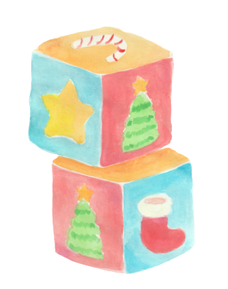

<div class="main">
    <div class="cont">
        <div id="light"></div>
        <!-- <div id="triangle"></div>
        <div id="triangle"></div>
        <div id="triangle"></div>
        <div id="triangle"></div>
        <div id="triangle"></div>
        <div id="triangle"></div>
        <div id="triangle"></div>
        <div id="triangle"></div>t -->
        
        <!-- <div class="toys">
            
            
            </div> -->
        <div class="col-xs-12" id="content">
            
            <div class="col-xs-6">
               <h1>Down left corner</h1>
            </div>
            <div class="col-xs-6">
                <h1>up right corner</h1>
            </div>
            <div class="cent">
                <h2>Top left corner</h2>
            </div>
            <div class="downleft">
                <h2>Up center</h2>
            </div>
            <div class="upright">
                <h2>down center</h2>
            </div>
            <div class="downcent">
                <h2>bottom right corner</h2>
            </div>
            <div class="bottomright">
                <p>A jailer seats three of the men into a line. B faces the wall, C faces B, and D faces C and B. The fourth man, A, is put behind a screen (or in a separate room). The jailer gives all four men party hats. He explains that there are two black hats and two white hats, that each prisoner is wearing one of the hats, and that each of the prisoners see only the hats in front of him but neither on himself nor behind him. The fourth man behind the screen can't see or be seen by any other prisoner. No communication among the prisoners is allowed.
                    If any prisoner can figure out what color hat he has on his own head with 100% certainty (without guessing) he must then announce it, and all four prisoners go free. If any prisoner suggests an incorrect answer, all four prisoners are executed. Which prisoner can give the correct answer.<p>
            </div>
        </div>
    </div>
</div>